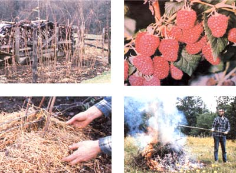

Now is the prime time to start next year's raspberry patch!
Strange as it may sound, some of my most vivid and enchanting childhood memories concern days spent walking dusty country lanes under a scorching summer sun . . . because there, among the weeds and bushes of the unkempt hedgerows, I'd see thick, tangled red raspberry brambles. I can clearly recall toddling along behind my mother as she stripped the leaning canes of their red jewels. The fruit smell seemed to fill the air, sunlight bounced in a green kaleidoscope from the leaves, and I was thrilled to see an occasional garter snake hanging heat drugged among the branches of a bush. Best of all, now and then my mother would pop an especially succulent sun-warmed berry into my mouth . . . and let me relish the special sweet/tart taste that only a fresh picked raspberry offers.
Because of those magical yesterdays, I've always associated summer with that rose hued fruit. Now that I'm older, I've learned that the unique, palate-pleasing nature of the red raspberry is due to the fact that the little fruits contain an unusually high number of esters . .. volatile organic compounds that-in combination with acids and such-produce distinctive flavors and fragrances. And, while there are two esters in blackberries, three in cherries, four in apricots, and five in strawberries, the red raspberry sports a total of nine of these ephemeral tastemakers!
Unfortunately, many folks are unable to obtain fresh raspberries at any cost. Oh, if you live in the right part of the country (and are lucky), you may be able to turn up a patch of wild berries by scouring hedgerows, windbreaks, and stream side brush. But it's quite unlikely that you'll find the fresh fruit in your grocery store. Raspberries can't be picked green to ripen later, you see, and they're far too delicate to survive lengthy shipment. More often than not, then, the only way to experience the flavor of fresh-from-the-cane "redcaps" is to grow them yourself.
Raspberries, which belong to the rose family (Rosaceae), have been cultivated in England for centuries. In fact, they were among the first fruits brought here by North America's original colonizers. The red razz most commonly grown today is a hybrid of the European species (Rubus idaeus)-which takes its name from the fact that the berries were found on Greece's Mount Ida in the days of Carolus Linnaeus-and the wild North American species (Rubus strigosus). Over the centuries, many different raspberry varieties have been developed .. . including the black, purple, and yellow strains, and even some types that bear fruit twice in one season! (The off color raspberries require slightly different care than red ones do, and I won't have the space to discuss them in this article.)
Naturally enough, your first job as a prospective raspberry-raiser is to select a site for your briar patch-to-be. Some experts believe that the reds produce exceptionally well in soil with a pH of 6 . . . but they don't really seem to be too fussy about soil acidity. They do, however, need earth that's moist, well drained, and rich in organic matter. An abandoned garden plot, for example, could serve as a bed . . . but only if it hasn't been used to grow tomatoes, potatoes, melons, or eggplant for at least three years, since all of these crops either attract or carry disease organisms that can harm the brambles.
The plot should be in full sun, no closer than 500 feet to any wild brambles (raspberries or blackberries), as these might infect the less-hardy domesticated plants. Likewise, you should also keep your bushes the same distance from any "tame" black rasp berries, since that variety could be killed by some diseases to which your reds can safely pIay host.
As noted above, raspberries need rich earth to thrive (if the soil doesn't contain enough humus, the fruit will be small and have more seeds than pulp). The best way to assure an adequate supply of organic material is to raise a green manure crop, such as rye, buckwheat, or clover the summer before you plan to put in your brambles and, at the end of that growing season, to work the plant material into the earth to a depth of two feet or more. In other words, right now might be a prime time to "lay the groundwork" for next year's patch! After such preparation, my soil-building "maintenance" schedule has consisted of little more than incorporating my non meat kitchen garbage directly into the raspberry patch as it accumulates (other folks seem to accomplish as much simply by fertilizing with cow manure every four years). I also work rock phosphate into the plot at four-year intervals, and-when soil tests indicate a need -add nitrogen when the plants are in the process of fruiting.
Even if you're able to find wild raspberries growing close to home, I'd advise against transplanting these plants to your prepared plot, for the native brambles could harbor afflictions that haven't yet gotten a foothold on your acreage. And besides, they won't produce the quantity or size of berries that purchased hybrids will yield. Therefore, unless domesticating the wildings is a matter of economic necessity, I'd recommend that you buy disease-free nursery stock.
Your local gardening supplies dealer (or your county agricultural extension agent) will likely be able to suggest various strains that can be expected to do well in your region. This is important information, as many red raspberry varieties have rather specific climatic requirements. (In my part of the country western Washington state the Willamette, Canby, and Puyallup types flourish.)
You'll probably want to set out transplants in the early spring, although-if you live in the South-fall plantings will give your berries a bit of a head start. Regardless of the season, you should check the roots of your to-be-planted brambles as soon as you get them from the nursery. They'll be potted or bare-rooted specimens, and-in either case-it's essential that the roots be kept moist until planted. Hence, if you can't move bare-rooted plants to your patch right away, you should first soak them for a few hours and then keep them covered with a damp cloth or-better yet-bury the roots in loose, damp soil until you're able to move them to their permanent home. (Do be sure to plant the raspberries before they begin to develop leaves!)
Since a bramble patch can quickly get out of hand, decide-before planting-how you will keep your canes under control. At each end of my own 14-foot rows (which are six to eight feet apart) is a 6-foot post . . . fitted with two or three 2-foot crossbars. I string heavy wire between the ends of these crosses-running it parallel to the rows-and keep the canes restrained between the wires.
(I've also occasionally used wires to connect posts that aren't fitted with crossbars, and tied the canes loosely, as I would tomato plants, to the wires.) When the bed is prepared and the restraining wires are in place, you're (finally) ready to start planting. Dig the hole for each young bramble deep enough to allow it to be planted at the same depth that it grew in the nursery or pot (you can usually tell from the dirt line on the cane . . . if not, simply make sure the tiny "growing points" on top of the root will lie about an inch below the surface of the plot). If you prepared the soil during the previous year, there'll be no need to add extra nourishment at planting time. But if you weren't able to till under a green manure crop in the year prior to planting, merely dig the holes a bit deeper than usual, putting compost in the bottoms. Either way, you'll want to spread the roots out at the proper depth, fill in the hole, and then give the young plants a good soaking. For the next two to three weeks, water the plants well at least twice a week unless the rain does it for you. After that, trim back the canes to just above the first pair of buds. Later, when the new canes break through the soil and develop their own leaves, you can cut the original stubs off at ground level.
Two keys to good berry production are maintaining moist soil and keeping competition-from weeds and grasses-to a minimum. Frequent tilling between the rows can help control the latter, but don't try to cultivate between the plants themselves, or you'll risk damaging their root systems. I think mulching is the best way to keep weeds down . . . and to conserve soil moisture, as well. I place a several-inch-thick layer of grass clippings throughout the patch. (If rodents are a problem in your area, you might keep the mulch six inches from the stems so as not to make it too easy for them to hide within nibbling range of the canes.)
Of course, my part of the country is really quite moist, with relatively mild winters, so I can get by with mulching only during the summer months. In harsher climates, a winter cover-over the entire bed-might well help protect the soil from freezing.
You'll no doubt be tempted to sample some of the fruits of your (and the brambles') labor as soon as possible, but it's best to postpone this pleasure until the second growing season. Your initial crop would be small, anyway, so steel yourself to pinch off the white blossoms as they appear. By doing so, you'll allow the plant to put all of its energy into developing a healthy root system . . . and you'll reap the rewards for years to come!
As you may know, raspberries are perennial plants that produce fruit on biennial canes. Each year, new shoots-called suckers-come up. These small canes lie dormant over the winter, produce fruit during their second season, then die. Every fall, you'll want to prune to the soil level all canes that fruited that year . . . and burn them, away from the patch. Then, early in the following spring before any signs of new growth appear-cut back the remaining canes to about four feet in length.
(EDITOR'S NOTE: The "ever bearing"; two crop varieties are a bit trickier to prune, since their canes normally bear in the fall of their first year and again in the early summer of their second. You can trim the first-year stalks back to about three feet during the winter months following their first (autumn) berry production, and then cut those old canes out completely the following summer, after they finish bearing. Or, if you'd rather sacrifice the early summer crop in exchange for an especially heavy fall harvest, you can cut all of the ever bearing stalks down to the ground each winter . . . and they'll yield bountifully in the autumn, when very little other fresh garden produce will be available.)
In the late spring, I often pause in the midst of one outdoor project or another to stroll over to the raspberry patch and listen to the humming of the honeybees. At that time of year, the tender green foliage shields a multitude of small white blossoms, which - after receiving the attention of the flying pollinators-will become tiny green berries.
While the canes are busily working at producing this fruit, it's especially important that you make sure the plants obtain enough water. In fact, although I live in an area with abundant rainfall, I still water my patch whenever we experience several hot days in succession. I don't sprinkle the plants, as that encourages mold. Instead, I soak the base of each cane with a trickling hose.
You won't have a bit of trouble guessing when your redcaps are ripe: You'll be able to stand near the row and smell those nine esters! The fruit will then be firm but yielding, and each will slip easily off the little white cone (called a torus) on which it grew.
Because of their delicacy, raspberries should be picked into a shallow container . . . preferably one that holds no more than four or five layers of fruit. Should a storm strike your patch during the harvest days, be sure to gather the berries immediately after it. Even pelting rain can damage the frail fruit, and ripe, wet berries quickly develop mold. And to best enjoy your pickings, eat or process the fragile redcaps within 24 hours after they've been picked.
Come autumn, when you're pruning back the season's fruiting canes, you may also have to remove some of the first-year canes to avoid overcrowding. On each plant, select five or six of the healthiest new shoots -spaced four to six inches apart-to leave for the following year. Then, unless you want to expand the size of your berry patch (in which case you'll have to wait for the early days of spring to do your thinning), cut out the rest of the canes and suckers.
To increase the size of your plot, select the hardiest of the new suckers and, before any growth appears in the spring, carefully lift each one with a garden fork (trying to get as much of the fibrous root as possible) . . . and cut the cane from its parent plant. The new mini-brambles can then be transplanted to prepared ground and watered thoroughly.
I've found that raspberries produce best from their third to their seventh year, after which production seems to drop off gradually. You should plan, then, to put in a new patch every decade or so . . . placing it in a different location and leaving the original plot berry free for five years.
The biggest threat that your bushes are likely to face is disease. You can minimize the risk of being hit by such problems, however, by buying disease-free stock . . . keeping your reds isolated from other bramble fruits, members of the nightshade family, and melons . . . and making a habit of burning your prunings.
Of course, there's always a chance that you'll encounter trouble despite such pre cautions. Here's what to look for: Anthracnose is a fungal disease that shows up a dark indentations on the canes . . . raspber ry mosaic is a viral ailment that affects the leaves by turning them yellow and curling them . . . and spur blight shows up at the bud junction, in the form of purple spots. I any of these three ailments attacks a cane or canes in the middle of a healthy patch, it's best to dig out the entire infected plant and burn it. [EDITOR'S NOTE: Many such symptoms-yellow, curled leaves in partic ular-can also indicate a lack of water or nu trients . . . so be certain that you're dealing with a diseased plant before you destroy a healthy specimen that's merely hungry or thirsty.
My raspberries haven't been troubled much by insect invaders. However, some growers do report problems with cane borers and Japanese beetles. The former make their presence known by creating small holes in canes, which are usually accompanied by wilting of the afflicted shoot. If you notice these symptoms, cut the cane and burn it. Japanese beetles are hard to avoid noticing . . . and you can pick the large, metallic-colored pests off and feed them to eager chickens or other fowl. (The commercial pheromone-scented Japanese beetle traps also work well.)
Other potential berry thieves include deer, horses, rabbits, and birds. Adequate fencing and netting draped over the ripening fruit should keep these troublemakers in line. Actually, I've found that the biggest threats to a raspberry patch are children, who are likely to swarm in and strip the canes of a whole day's pickings that you'd earmarked for jam and jelly.
Although I try to restrain such competition for my family's crop, every now and then there'll be just too much fruit for me to process at once. (At their peak, my two 14foot rows produce between two and three quarts a day!) When that "calamity" occurs, I gleefully order the whole household out into the patch to eat the berries right of the canes. No one has to be asked twice. Indeed, my husband annually swears that it's his all-time favorite way to enjoy redcaps. And, as each tender ruby morsel revives my childhood memories, I always say that I agree!
Although fresh raspberries-right off the cane, on top of cereal, or covered with milk or cream-certainly rank among the greatest of culinary treats, the fruit of the bramble can star in any number of tempting prepared dishes, as well. Most cookbooks have a goodly supply of such recipes, but here are a few of my family's favorites . . . which you just might have a bit of difficulty finding elsewhere.
RASPBERRY RICOTTA PIE
pastry for a 9-inch pie shell (use your favorite recipe)
2-1/2 cups of fresh raspberries
3/4 cup of granulated sugar
1-1/2 tablespoons of quick-cooking tapioca
1/2 teaspoon of ground cinnamon
8 ounces of ricotta cheese
1 egg (separated)
1/4 teaspoon of salt
1/2 cup of half-and-half
1 tablespoon of lemon juice
3/4 teaspoon of grated lemon peel
To begin, line a 9-inch pie pan with pastry. Next, combine the berries, 1/2 cup of the sugar, the tapioca, and the cinnamon until they're well blended . . . and let the mixture stand for 5 minutes.
While the berry mix is "resting", place the ricotta, the egg yolk, the salt, the half and half, the remaining sweetener, the lemon juice, and the lemon peel into a blender and whirl the ingredients until they're pureed. Then, in a separate container, beat the egg white until it forms soft peaks, and fold it into the cheese mixture just enough to blend the concoction.
Now, spoon the berry mix into your pastry shell, and spread the blended topping over the fruit. Finally, sprinkle the cheese fruit mix with cinnamon before baking the pie . . . first in a 425 °F oven for 10 minutes, and then at 350°F for another 30 minutes, or until the topping appears firm when you shake the dish gently. This delicious pie should serve at least six people.
RASPBERRY FOOL
1 pound of fresh raspberries
3/4 cup of granulated sugar (or to taste)
1 cup of heavy cream
2 tablespoons of powdered sugar
3 tablespoons of raspberry brandy (optional)
Cook the berries and granulated sugar over very low heat until the fruit is soft, then press the mixture through a sieve (don't burn yourself!). After the puree has cooled completely, lightly whip the cream in another container. Then add the powdered sugar and brandy to the cream . . . fold this mixture into the puree, using a rubber spatula . . . and spoon the fool into four small bowls or glasses. Chill the servings until they're very cold, and then dig in! This traditional English dessert is especially good when served with thin butter cookies or slices of pound cake.
2 cups of fresh raspberries
1/2 cup of granulated sugar (or to taste)
1/2 cup of sour cream
2 cups of ice water
1/2 cup of red wine
4 or 5 small, fresh nasturtium leaves
(optional)
whole raspberries (for garnish)
This dish should be prepared at least 2 hours prior to serving, to give the flavors time to "marry". First, rub the berries through a fine sieve, then add the sugar and sour cream. After mixing these ingredients well, add the water and wine (periodically tasting the mixture to see if it needs additional sweetening). Now, chill the soup . . . and serve it in bowls garnished with a fresh nasturtium leaf and a few whole berries. This recipe should make enough for four or five servings.
|
 LEFT: During its dormant period, our raspberry patch looks quite lifeless. BELOW. The prunings (and any infected plants) from your bramble garden should always be burned . . . at a goodly distance from the patch itself. BELOW, LEFT: A good, heavy layer of mulch is one of the key ingredients for success in raspberry culture. BOTTOM: Fitting rewards for the berry grower's labors! |
|
|